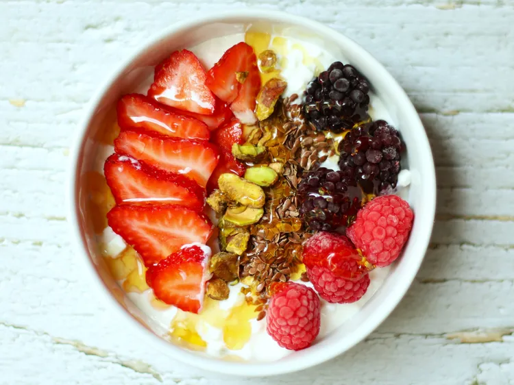

Ingredients
- 1/2 cup low-fat cottage cheese
- 2 large strawberries, sliced
- 3 raspberries
- 3 blackberries
- 1 tablespoon pistachios, roughly chopped
- 1 teaspoon flaxseed
- 1 tablespoon honey
Nutritional Info
Calories: 266
Protein: 18g
Fat: 7g
Carbs: 37g
Let's Cook
This berry cottage cheese breakfast bowl is a simple, nourishing bowl that’s both refreshing and filling. Berries, pistachios, and flaxseed top low-fat cottage cheese for a nourishing, hearty breakfast that is also beautiful to look at.

Calories: 266
Protein: 18g
Fat: 7g
Carbs: 37g
Place cottage cheese into a small bowl.
Arrange strawberries, raspberries, blackberries, pistachios, and flaxseed side-by-side on top.
Drizzle with honey.